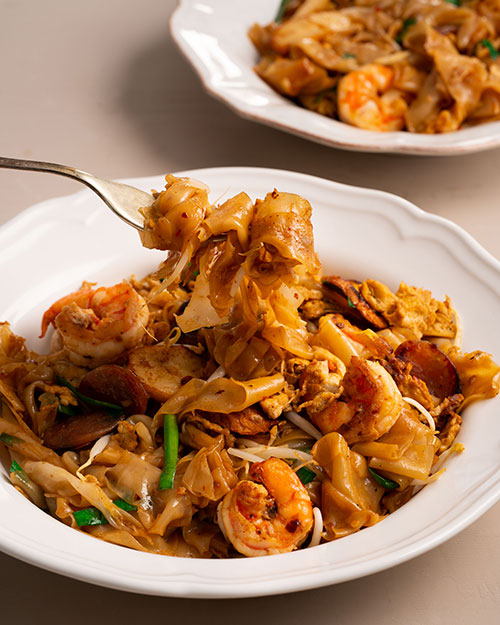

Char Kway Teow

Description
One of my all time favourite food that is the combination of many different cultures. Introducing the Char Kway Teow which is a stable in South East Asia, especially in countries like Singapore and Malaysia.
While it may look to be very straightforward and just a stir fried noodle dish, there are many different layers and variations to it, making it deceptively difficult! Even some top chefs are unable to grasp the skills it take to fry this heavenly piece of meal but with this simple recipe, I'm sure all of you will be able to at least get the gist of it.
Ingredients
- Chinese Sausage
- Fried Fish Cakes
- Garlic Chives
- Prawn/Shrimp
- Egg
- Bean Sprouts
- Garlic
- Rice Noodles
- Dark Soy Sauce
- Light Soy Sauce
- Oyster Sauce
- Kecap Manis
Steps
- Mix Sauce together
- Place whole packet of noodles in microwave, heat on high for 1.5mins to 2mins until warm and pliable, not hot, turning packet over as needed
- Handle carefully and measure out 500g noodles into heatproof bowl. Separate noodles stuck together
- Cook using base recipe or easier method
- Heat lard and 1tbsp oil in a wok or very large heavy based skillet over high heat. Swirl around the wok.
- When it starts smoking, add prawns. Cook for 30 seconds.
- Add garlic, stir for 10 seconds.
- Add noodles, then using both hands on the handle, toss 4 times until coated with oil(or gently fold using a spatula + wooden spoon).
- Add Chinese sausage and fish cake, toss or gently fold 4 times.
- Add bean sprouts and garlic chives, toss or gently fold 6 times.
- Push everything to one side, add remaining 1tbsp oil. Add egg and cook, moving it around until mostly set - about 1 minute. Use wooden spoon to chop it up roughly.
- Pour Sauce over noodles, then toss to disperse sauce through the noodles. Pause between tosses to give the noodles a chance to caramelise on the edges.
- Serve immediately!